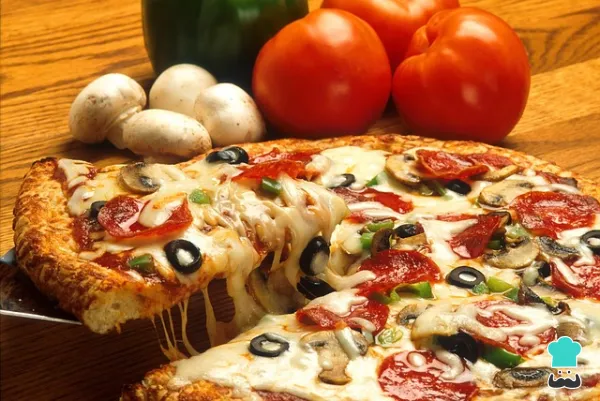

Como hacer pizza casera
Ingredientes
- 1kg de harina
- 1 cucharadita de sal fina
- 1/2 tazas de agua tibia
- 30g de levadura fresca

Procedimiento
Es esencial empezar con la elección de adecuada de harina, ha de ser harina de fuerza.
En la receta se puede usar levadura fresca o seca, aceite, harina de fuerza y sal para crear una masa esponjosa.
- Para empezar mezclamos el agua templada con la levadura fresca
- Despues de mezclar, agrega las dos cucharadas de aceite. Mezcla bien para que se integren todos los ingredientes para la pizza.
- Antes de que se enfríe, añade en un bol amplio la harina de fuerza y la sal
- Ahora es cuando tienes que empezar a amasar bien hasta que notes que la masa de pizza casera deja de pegarse en tus manos
- Cuando tengas la masa de pizza esponjosa lista, deberás darle forma de tubo largo y cortarla en 4 particiones.Después, haz una bola con cada partición y tápalas con un trapo limpio y seco. Deberás dejarlas reposar durante 45 minutos
- Pasado el tiempo correspondiente, espolvorea un poco de harina sobre una mesa para preparar la pizza casera, coge una de las bolas y colócala sobre ella. Ahora deberás extenderla con tus manos estirando desde el centro hacia los costados, dándole forma circular
Una vez estirada, ya puedes añadir la salsa para pizza casera y los ingredientes para pizza que prefieras
- Una vez hayas escogido los ingredientes y tengas tu masa de pizza casera terminada, deberás precalentar el horno a temperatura máxima durante unos 20 minutos
- Y para terminar pasado el tiempo introduce la preparación pizza casera y hornéala durante 10 minutos aproximadamente. Deberás vigilarla porque el tiempo final variará en función del tipo de horno y la intensidad que tenga.
